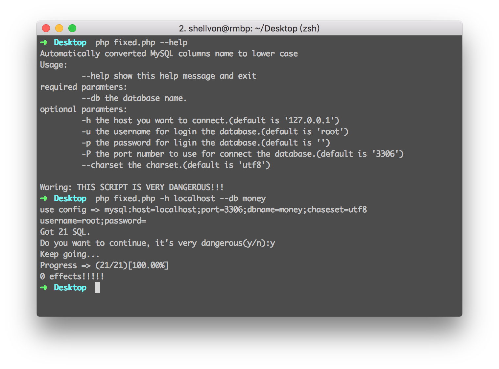

2016-04-25 11:47
mysql批量修改字段名为小写
前言
前同事的某个个人项目在把PHP的error_reporting开成E_ALL的时候，发现各种下标未定义的问题。我帮忙看了一下，发现其实是数据库里面有的字段是大写，有的是小写(貌似是之前在windows...)，最开始打算手动改，一看datbase的table我就蒙了，超过了80个表，字段就更多了。
基础
- MySQL(版本大于5.0)/SQLite/Postgres这种数据库会利用
information_schema来保存自己的元数据信息。 - Oracle这种数据库没有,但是会有
USER_TAB_COLS,ALL_TAB_COLS等。 - 修改字段大小写的SQL为:
ALTER TABLE tabl_ename CHANGE old_column_name new_column_name type extra, isnullable,charset.(charset_set_name不要的话我在后面测试的时候发现某些中文是无法alter的(UTF8的字节数问题)) - MySQL columname 不区分大小写:http://stackoverflow.com/questions/2009005/are-column-and-table-name-case-sensitive-in-mysql
- PDO强制列名小写 => http://php.net/manual/zh/pdo.setattribute.php
构造SQL查询
首先,为了获取alter需要的数据信息,我们得写如下SQL:
SELECT column_name,column_type,extra, is_nullable, character_set_name FROM information_schema.columns WHERE table_schema = 'dbname'.
单独这些信息还不够，我们最好的方式是直接可以用SQL得到最终需要执行的alter语句，然后自动去执行。现在看看，我们发现is_nullable它的值是YES/NO,而在alter中需要NULL/NOT NULL,character_set_name可能为空(比如类型是int的...)，不为空的时候需要使用CHARACTER SET charset_name来执行。
所以我们需要使用到MySQL的分支语句了(CASE WHEN)。
现在的SQL大概这样子:
SELECT column_name,column_type,extra, CASE WHEN is_nullable = 'YES' THEN 'NULL' ELSE 'NOT NULL' END, CASE WHEN character_set_name!='' THEN CONCAT('CHARACTER SET ', character_set_name) else '' END FROM information_schema.columns WHERE table_schema = 'dbname'
也许你注意到我的CONCAT了，没错，上面的查询结果我还不满意，现在还得利用它继续组装成我最后需要执行的SQL，也就是说，我想查询一列。这一列内容直接包含我最后要执行的SQL，多列变一列当然CONCAT啦！！
现在希望的形式是(他们之间有空格隔开才可以，得类似于Python中的' '.join(lst))
'ALTER TABLE' + table_name + 'CHANGE' + column_name + new_columname + type + charset + is_nullable
所以最后的现在的SQL像这样子
SELECT CONCAT('ALTER TABLE ', table_name, ' CHANGE ', column_name,' ', LOWER(column_name), ' ', column_type,' ', CASE WHEN character_set_name!='' THEN CONCAT('CHARACTER SET ', character_set_name) ELSE ' ' END, CASE WHEN is_nullable = 'YES' THEN ' NULL' ELSE ' NOT NULL' END, ';') as new_sql FROM information_schema.columns WHERE table_schema = 'dbname';
仔细看看现在生成出来的SQL,似乎有些alter是无用的，因为原来字段本来就是小写。所以可以在where后面多加一个限制：AND BINARY column_name != BINARY LOWER(column_name) (MySQL columname 不区分大小写)
现在生成出来的new_sql大概就是这样子：
ALTER TABLE tags CHANGE expiration expiration int(10) unsigned NOT NULL;
备份！
现在我们可以得到所有需要修改的字段了。要修改之前，为了确保我们的工作无误可回退，所以需要先做一次数据库备份.
mysqldump -u root -p dbname > back.sql
编写脚本
最终查询出来的SQL还需要执行，所以我们得写一个脚本来执行。 如论用Python/PHP那种语言都可以，我这里是因为对方机器上没有安装Python的MySQL库,所以我修改了代码为PHP来编写。
<?php // please run this script after you dumped the database.. // command to dumpload => mysqldump -u root -p fmscms > back.sql // Automatically converted MySQL columns name to lower case. // if (PHP_SAPI !== 'cli') { exit('This file only supported to run in command line'); } // default config. $default_cfg = array( 'h' => '127.0.0.1', 'P' => '3306', 'u' => 'root', 'p' => '', 'charset' => 'utf8', ); // displya usage. function usage() { echo 'Automatically converted MySQL columns name to lower case'.PHP_EOL; echo 'Usage:'.PHP_EOL; echo "\t --help show this help message and exit".PHP_EOL; echo 'required paramters:'.PHP_EOL; echo "\t --db the database name.".PHP_EOL; echo 'optional paramters:'.PHP_EOL; echo "\t -h the host you want to connect.(default is '127.0.0.1')".PHP_EOL; echo "\t -u the username for login the database.(default is 'root')".PHP_EOL; echo "\t -p the password for login the database.(default is '')".PHP_EOL; echo "\t -P the port number to use for connect the database.(default is '3306')".PHP_EOL; echo "\t --charset the charset.(default is 'utf8')".PHP_EOL; echo PHP_EOL.'Warnings: THIS SCRIPT IS VERY DANGEROUS!!!'.PHP_EOL; } function parseConfig($default_cfg) { // see => http://php.net/manual/zh/function.getopt.php $command = getopt('h:u:p:P:', array('help', 'db:', 'charset:')); if (empty($command) || isset($command['help'])) { usage(); exit(); } if (!isset($command['db'])) { exit('the database name is required (use --db to specified)'.PHP_EOL); } $options = array_merge($default_cfg, $command); $dsn = "mysql:host={$options['h']};port={$options['P']};dbname={$options['db']};chaseset={$options['charset']}"; echo 'use config => '.$dsn.PHP_EOL."username={$options['u']};password={$options['p']}".PHP_EOL; return array( 'dsn' => $dsn, 'username' => $options['u'], 'password' => $options['p'], 'dbname' => $options['db'], // for easy access later. ); } function getDatabase($dsn, $username = '', $password = '', $options = null) { if (empty($options)) { $options = array( PDO::ATTR_ERRMODE => PDO::ERRMODE_EXCEPTION, PDO::ATTR_DEFAULT_FETCH_MODE => PDO::FETCH_ASSOC, ); } return new PDO($dsn, $username, $password, $options); } function toLowerCaseColumnName($pdo, $dbname) { // http://stackoverflow.com/questions/11312433/how-to-alter-a-column-and-change-the-default-value // ALTER TABLE foobar_data CHANGE COLUMN col col VARCHAR(255) NOT NULL DEFAULT '{}'; // // http://stackoverflow.com/questions/10346728/string-compare-exact-in-query-mysql // ugly sql. $result = $pdo->query("SELECT CONCAT( 'ALTER TABLE ', table_name, ' CHANGE ', column_name, ' ', LOWER(column_name), ' ', column_type, ' ', CASE when CHARACTER_SET_NAME != '' THEN CONCAT('CHARACTER SET ', CHARACTER_SET_NAME) else ' ' END, ' ', extra, CASE WHEN IS_NULLABLE = 'YES' THEN ' NULL' ELSE ' NOT NULL' END, CASE WHEN column_default is null THEN ' ' ELSE CONCAT(' DEFAULT \'', column_default, '\'') END, ';') AS new_sql FROM information_schema.columns WHERE table_schema = '{$dbname}' #AND BINARY column_name != BINARY LOWER(column_name) AND data_type IN ('char', 'varchar','INT', 'TINYINT', 'datetime','text','double','decimal') ORDER BY new_sql;"); $all_sql_with_key = $result->fetchAll(); $sql_cnt = count($all_sql_with_key); echo 'Got '.$sql_cnt.' SQL.'.PHP_EOL; if ($sql_cnt === 0) { echo "No need to alter, exit!"; exit(0); } while (true) { $line = readline('Do you want to continue, it\'s very dangerous(y/n):'); $line = strtolower($line); if (in_array($line, array('y', 'n'))) { break; } echo 'Wrong input!!! Please choose again!!!'.PHP_EOL; } if ($line == 'n') { echo 'Exit it'.PHP_EOL; exit(0); } else { echo 'Keep going...'.PHP_EOL; } $current = 0; $sql_cnt = $sql_cnt > 0 ? $sql_cnt : 1; $effects_cnt = 0; $sql_lst = array();; foreach ($all_sql_with_key as $row) { $sql = $row['new_sql']; $pdo->exec($sql); $sql_lst[] = $sql; ++$current; $percent = number_format($current * 100. / $sql_cnt, 2, '.', ''); echo "\rProgress => ({$current}/{$sql_cnt})[{$percent}%]"; } echo PHP_EOL; file_put_contents('exec.sql', implode(PHP_EOL, $sql_lst).PHP_EOL, FILE_APPEND); return $sql_cnt; } // GOGOGOGO!!!!!! $config = parseConfig($default_cfg); $db = getDatabase($config['dsn'], $config['username'], $config['password'], null); $result = toLowerCaseColumnName($db, $config['dbname']); echo "{$result} effects!!!!!".PHP_EOL;
执行效果(截图中有些typo error,上述脚本修复了)：

结语
也许你会说，既然应用级别可以设置属性不区分大小写，Mysql默认也可以不区分，那么为什么还要写这个脚本呢？
- 因为强迫症在命运风格上表示不能接受，所以第一反应是修改大小写。
- 因为之前我傻呀....没想到APP级别去设置属性。。。
写代码一定要注意大小写!!!!!!